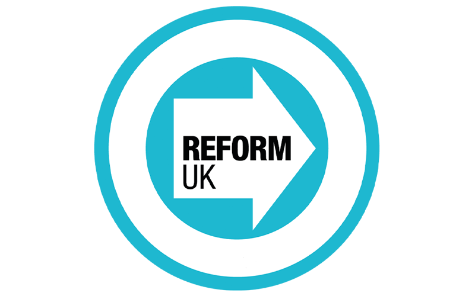
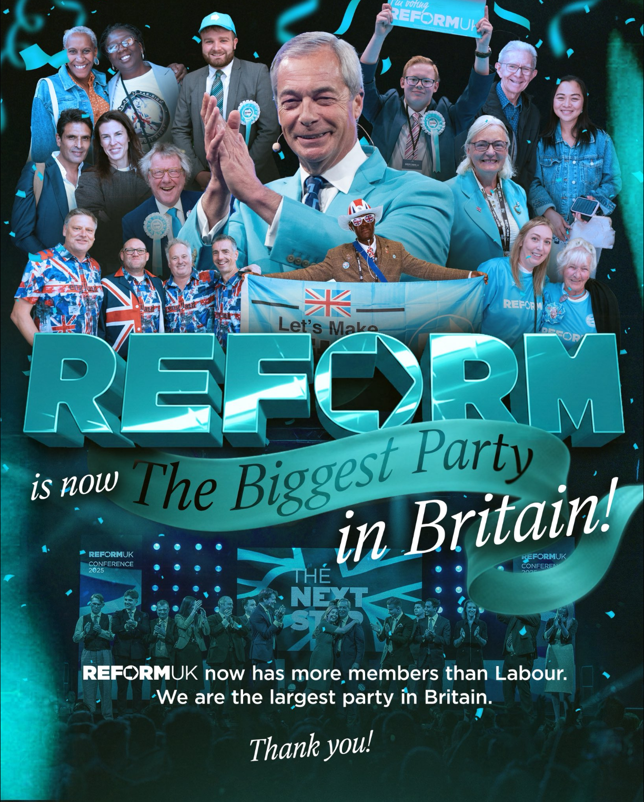

Welcome to the Oxon Universities’ Reform Society
Encouraging open debate and democratic reform.
We are a student-led society committed to political reform, free discussion, and civic engagement across Oxford and partner institutions.
We welcome members from all academic backgrounds.
What We Stand For
We are a university society dedicated to providing a space for free speech, serious discussion, and association between students, linked with ReformUK
This website, alongside our social media platforms, provides updates on our events, campaigns, publications, and ongoing growth as a society.
